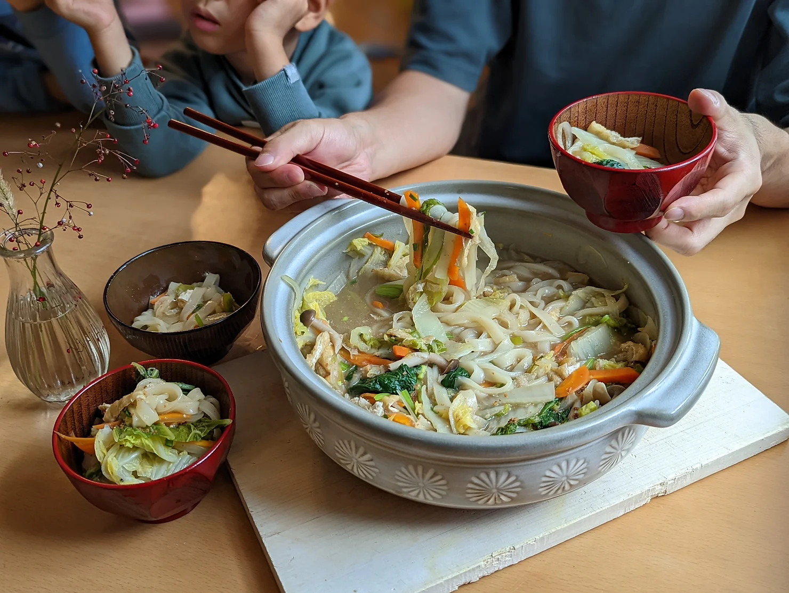

MISO UDON NOODLE SOUP/ 味噌煮込みうどん

Ingredients
200g (2 servings) frozen udon noodles
40g/ 2 tbsp lotus root, grated (optional)
1 large (200g) onion, thinly sliced
4 pieces shiitake mushroom, thinly sliced
3 cups sliced (500g) Napa cabbage
1 cup (100g) leeks, thinly sliced
1 cup (100g) spinach* see Miwa's tips
½ cup (100g) carrots, thinly sliced
1 ½ tbsp toasted sesame seeds
green onions, for garnish
Directions
Thinly slice the onion, leeks, carrots, and shiitake mushrooms. Set aside. Chop the Napa cabbage into bite size pieces. Remove excess oil from the fried tofu by pressing them with a piece of paper towel then cut them into strips. Mince the garlic. Grind the toasted sesame seeds.
To a pot, add all the vegetables you just chopped (step 1), and 200ml water, mirin, cooking sake and soup stock powder. Bring it to a boil over high heat. Once it comes to a boil, cover with a lid and cook it on low for 15 mins.
Open the lid then add in the fried tofu, frozen udon noodles, spinach and grated lotus root. Add the remaining water. Just before it comes back to a boil, remove from heat. Dissolve in the miso paste and add in the soy sauce. Serve the udon soup in a bowl with the ground toasted sesame seeds and chopped green onions.